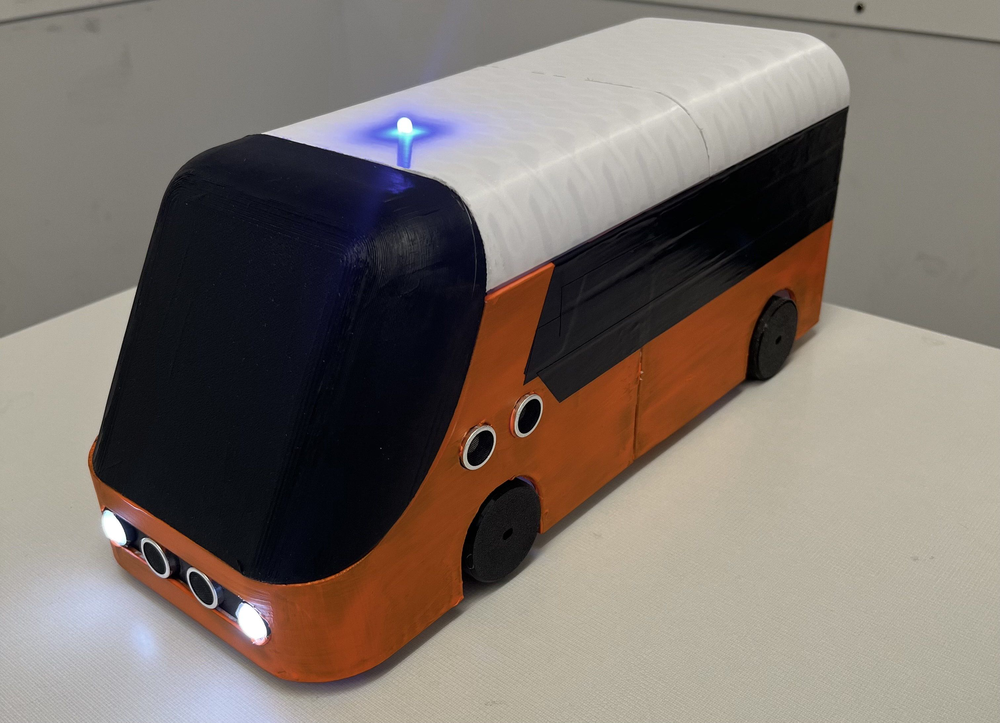

I collaborated with a team to co-develop a solution of an autonomous tram that travels around the UT campus as an efficient, convenient, and accessible transit prototype for the annual Operation Ramshorn project competition organized by the Ramshorn Scholars Program. The tram is designed to travel along an established path that loops around the campus, and the detects and stops for obstructions, pedestratians, and its routine pickup and dropoff stations. For our demoable prototype, I designed the embedded control system and acuation of the tram using an ESP32, motor driver, IR reflectance sensor, sonar sensors, and TT DC motors, programmed the tram navigation and obstacle detection software, and organized subsystem integrations with the aseembly of the tram. At the end of development, we compiled our engineering process and development documentation and we presented our project to 5+ faculty judges in the 2025 Operation Ramshorn Project Showcase, where our project won the "Community Favorite Award".